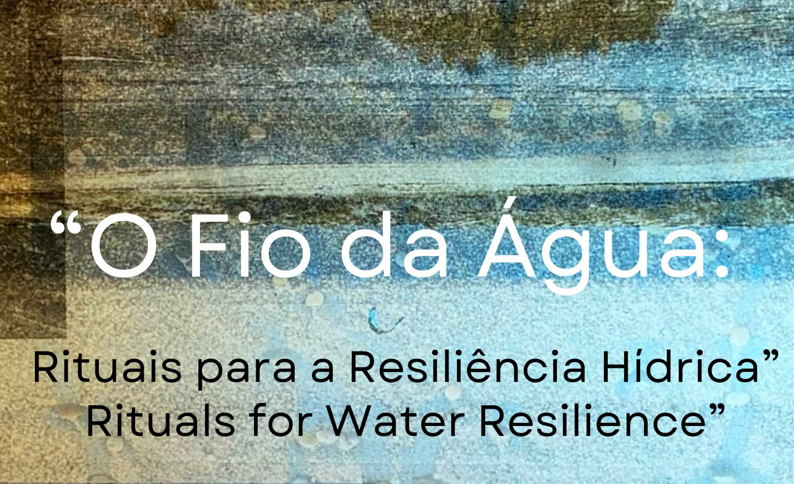
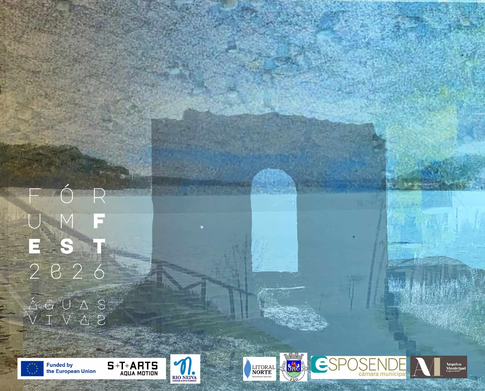

Uma intervenção performativa inspirada nas ligações à água em Esposende, que recupera memórias de cheias e inundações e formas de relação, adaptação e transformação no seio dos ecossistemas hídricos em tempos de incerteza.
Para explorar a experiência em português e a partir de Portugal, clica no botão abaixo:
O Fio da ÁguaA performative intervention inspired by the connections to water in Esposende, drawing on memories of floods and ways of relating to adapting to and transforming within water ecosystems in times of uncertainties.
To explore the experience in English from an international perspective, click the button below:
O Fio da Água